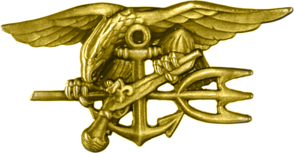

Ever since i was small I have been interested in joining a Special Force because of the unique challenges, the opportunity to push my physical and mental limits. The Special Forces demand high levels of discipline, resilience, and strategic thinking traits I strive to develop.The opportunity to continually grow, learn specialized skills, and make a difference at the highest level motivates me to pursue this path. Additionally, the values of integrity, courage, and dedication that the Special Forces embody resonate deeply with me.

I'm also interested in becoming an electrician later or if dont qualify for special forces.I enjoy working with my hands and solving practical problems. The field offers a chance to apply technical knowledge to real-world situations, whether it's troubleshooting electrical systems or ensuring the safety and functionality of buildings. I find the work both challenging and rewarding, and the opportunity to learn and grow in a skilled trade is something worth learning to me. Additionally, being an electrician provides job stability, the potential for growth, and the chance to contribute to society by making sure electrical systems are safe and reliable. It's a career that offers both independence and the satisfaction of seeing the tangible results of my work.